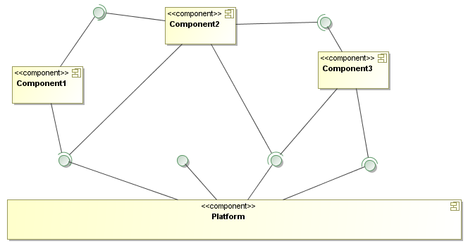

Softverski obrasci i komponente
Razvoj baziran na komponentama


Fakultet tehničkih nauka u Novom Sadu
Katedra za informatiku
Razvoj softvera
In a world of rapidly changing business requirements, custom-made software is often too late – too late to be productive before becoming obsolete.
Modularizacija
- Savladavanje kompleksnosti softvera podelom na manje celine – Divide and Conquer princip.
- Moduli treba da imaju visoku koheziju i slabu spregu sa drugim modulima.
Softverske komponente
- Softverske komponente su izvršive jedinice koje se nezavisno proizvode, dobavljaju i instaliraju i koje se mogu komponovati u cilju formiranja funkcionalnog sistema.
- U cilju obezbeđivanja kompozicije, komponente moraju da poštuju određeni komponentni model i da budu kreirane za određenu ciljnu platformu.
- Sistem sastavljen od softverskih komponenti se naziva komponentni softver (component software)
Razvoj baziran na komponentama
- Razvoj baziran na komponentama (Component-Based Development - CBD) – izrada softvera upotrebom softverskih komponenti.
- Komponentizacija nije nova ideja – uspešno se primenjuje u različitim oblastima...
- ...ali do nedavno nije bilo velikog uspeha u oblasti razvoja softvera.
Šta je problem sa softverom?
Često se tvrdi da je softver previše fleksibilan da bi bilo moguće kreirati komponente – ovo ne može biti razlog već više znak nezrelosti oblasti.
Integracija kao preduslov ponovne iskoristljivosti komponenti
A key issue is that today’s software environments focus on writing new software, instead of integrating existing software into new systems. In reality, integrating existing code has become a large part of the work of software developers. Therefore, there is a need for tools that standardize the integration aspects of software so that reusing existing components becomes reliable, robust and cheap.
Prednosti komponentnog razvoja
- Jasna podela nadležnosti.
- Visok stepen kohezije i nizak stepe sprege – komponente se bave jasno određenim poslom i komuniciraju sa svojom okolinom preko jasno definisanih interfejsa i protokola.
- Ponovna iskoristljivost (reusability) – ista komponenta se može koristiti u više aplikacija.
- Komponente se mogu kupovati od nezavisnih proizvođača koji se specijalizuju za izradu određenog tipa komponenti –brža izgradnja kvalitetnog softvera.
- Održavanje i unapređenje komponente se prebacuje na proizvođača koji može biti eksterni (third-party).
- Proizvođači komponenti mogu istu komponentu prodavati velikom broju kupaca i time stvoriti preduslove za dalji razvoj i usavršavanje komponente.
Preduslovi uspešne komponentizacije
- Postojanje standarda koji su praktični i ostvarljivi:
- OSGi
- EJB
- DCOM i ActiveX
- CORBA
- Postojanje tržišta komponenti:
- Eclipse Marketplace
- Firefox/Chrome priključci
- Google Play, Apple App Store i dr.
- Isplativost razvoja: smatra se da komponenta mora bar 3 puta da se iskoristi da bi se njen razvoj isplatio.
Vrste softvera prema načinu dobavljanja
- Namenski izrađen softver (Custom made)
- Standardni softver
Namenski izrađen softver
- Može biti u potpunosti prilagođen korisniku.
- Može koristiti vlasnička znanja i iskustvo firme za koju se proizvodi.
- Ovim se može postići značajna prednost na tržištu.
- Razvoj i održavanje može biti skupo. Interoperabilnost sa drugim sistemima može biti problematično.
Standardni softver
- Kupuje se gotov i parametrizuje se da bude "dovoljno dobar" za posao za koji se koristi.
- Kratko vreme izgradnje – svodi se na konfiguraciju i prilagođavanje.
- Unapređenje, održavanje i implementacija interoperabilnosti sa drugim sistemima se prebacuje na proizvođača standardnog softvera.
- Teško može biti osnova sticanja prednosti na tržištu jer i konkurencija može kupiti isti softver.
Problem sa standardnim softverom
- Često zahteva drastičnu promenu poslovnih procesa i načina rada u cilju prilagođavanja – primer: uvođenje SAP R/3 u Australijsku poštu.
- Izmenu procesa bi trebalo raditi u skladu sa izmenom poslovnog okruženja a ne u cilju prilagođavanja predviđenom načinu rada softvera.
Komponentni softver – hibridni pristup
- Namenski izraditi komponente u domenu ekspertize.
- Kupiti standardne komponente za ostale domene.
- Primer: kupovina GUI komponenti, komponenti za rad sa XML datotekama, bazama i sl.
- Dobijamo prednost na tržištu jer u svom domenu radimo posao na način na koji želimo ali istovremeno ubrzavamo razvoj upotrebom standardnih, robusnih komponenti u domenima koji nisu od presudnog značaja za naš poslovni domen.
Evolutivni razvoj
- Za razliku od monolitnih rešenja gde imamo periodičnu zamenu sistema novim (revolutivni pristup) kod komponentnog razvoja unapređenje sistema možemo raditi evolutivno kroz nezavisno unapređenje komponenti.
- Imamo niz češćih manjih promena umesto ređih velikih promena koje menjaju sistem iz korena.
Univerzalne komponente?
- ... ne postoje.
- Komponente se prave za određenu ciljnu platformu i moraju poštovati određeni komponentni model.
- Takođe, moramo unapred imati svest o korisnicima komponente koju razvijamo odnosno njihovim očekivanjima.
Apstraktna arhitektura softvera baziranog na komponentama
Platforma
- Obezbeđuje infrastrukturu u koju se "ugrađuju" komponente.
- Pruža skup bazičnih servisa koje komponente mogu da koriste.
Servisi
- Predstavlja skup funkcionalnosti koje određena komponenta pruža drugim komponentama i čije korišćenje je definisano ugovorom, koji propisuje način upotrebe (npr. interfejsi i protokoli), i ograničeno politikom upotrebe servisa.
- Platforma mora imati propisane mehanizme za objavljivanje i pronalaženje servisa.
Konzumenti i pružaoci servisa
- U komponentnom softveru svaka komponenta može biti u ulozi pružaoca i/ili konzumenta servisa.
- Različite tehnike pronalaženja i povezivanja servisa.
Literatura
- C. Szyperski, Component Software: Beyond Object-Oriented Programming, Addison-Wesley Longman Publishing Co., Inc., 2002